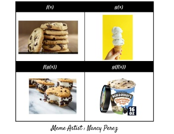
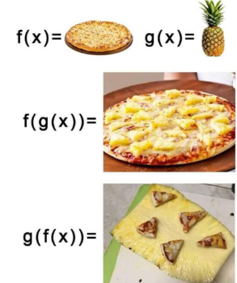
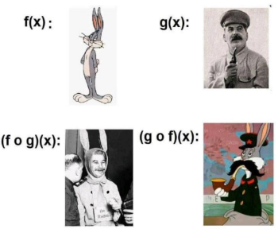
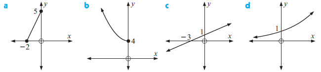

Definición
Consideremos las funciones \( f: x \mapsto x^2 \) y \( g: x \mapsto 3x-1 \).
La composición \( f \circ g \) significa que \(g\) transforma \(x\) en \(3x-1\) y, a continuación, \(f\) transforma ese resultado en \((3x-1)^2\).
Es decir:
\( (f \circ g)(x) = f(g(x)) = (3x-1)^2 \)
Esto puede imaginarse como dos máquinas sucesivas:
- Máquina g: recibe un número \(x\), lo multiplica por 3 y le resta 1, entregando \(3x-1\).
- Máquina f: recibe el resultado de la máquina anterior y lo eleva al cuadrado, dando como salida \((3x-1)^2\).
Propiedad fundamental
Ejemplo:
Sean \( f(x)=x^2 \) y \( g(x)=x+4 \).
\((f \circ g)(x) = f(g(x)) = f(x+4) = (x+4)^2 = x^2+8x+16\).
\((g \circ f)(x) = g(f(x)) = g(x^2) = x^2+4\).
Por tanto, \( f(g(x)) eq g(f(x)) \).



Ahora, a practicar
- Duración:
- 15
- Agrupamiento:
- indivi
1. Hallar \(f\circ g\) y \(g\circ f\) en los siguientes casos:
- \(f(x)=3x-5,\qquad g(x)=\dfrac{1}{x}\)
- \(f(x)=x^{2},\qquad g(x)=3x-5\)
- \(f(x)=\dfrac{1}{x},\qquad g(x)=\sqrt{x}\)
- \(f(x)=x^{2},\qquad g(x)=\sqrt{x}\)
- \(f(x)=\sqrt{x},\qquad g(x)=\dfrac{1}{x^{2}-4}\)
2. ¿Se puede componer una función consigo misma? ¿Qué obtenemos si hacemos \((f\circ f)(x)\) para \(f(x)=2x+1\)?
Hacerlo también para \(f(x)=\dfrac{1}{x}\) y \(f(x)=\dfrac{1-x}{x+1}\).
La función inversa
Ejemplo: Calcular la función inversa de \( f(x)=2x+3 \).
Paso 1. Escribimos \( y=f(x) \):
\( y=2x+3 \)
Paso 2. Intercambiamos los papeles de \(x\) e \(y\):
\( x=2y+3 \)
Paso 3. Despejamos \(y\):
\( y=\dfrac{x-3}{2} \)
Resultado:
\( f^{-1}(x)=\dfrac{x-3}{2} \)
¿Son inversas?
3. Comprobar que las siguientes funciones son inversas y representarlas gráficamente sobre los mismos ejes:
- \( f(x)=2x,\qquad g(x)=\dfrac{x}{2} \)
- \( f(x)=x^{3},\qquad g(x)=\sqrt[3]{x} \)
- \( f(x)=x+1,\qquad g(x)=x-1 \)
¿Qué conclusión se obtiene a la vista de sus gráficas?
La función inversa de forma gráfica
- Duración:
- 20
- Agrupamiento:
- parejas
4. Copia las gráficas de las siguientes funciones e incluye en cada caso las gráficas de \(y=x\) y \(y=f^{-1}(x)\):

5. Dibuja la gráfica de \( f: x \mapsto x^{2}-4 \) y refléjala en la recta \(y=x\).
- ¿Tiene \(f\) función inversa?
- ¿Tiene \(f\), restringida a \(x \geq 0\), una función inversa?
6. Dibuja la gráfica de \( f: x \mapsto x^{3} \) y su función inversa \( f^{-1}(x) \).